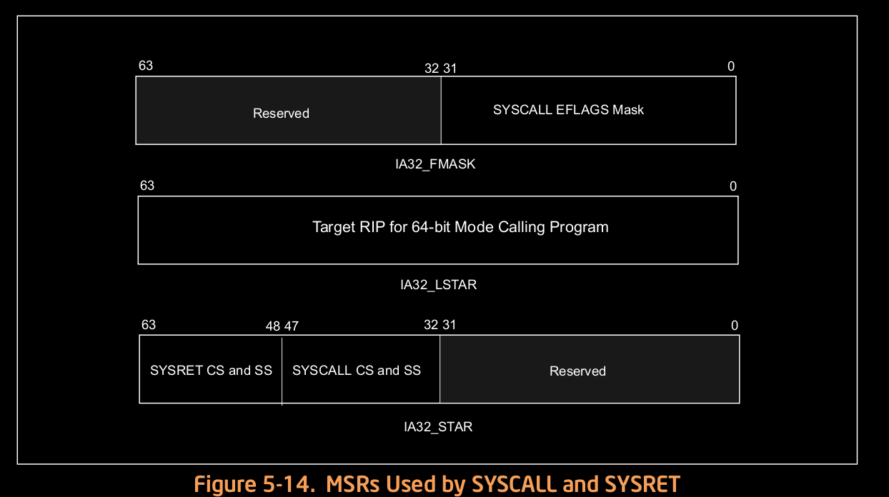

linux 系统调用原理¶
title: linux系统调用(基于x86)分析
author: Rachel
x86 架构支持:¶
提供了SYSCALL/SYSRET和SYSENTER/SYSEXIT两对指令,我们以前一对为例进行说明.
64位模式下快速系统调用:SYSCALL/SYSRET¶
SYSCALL/SYSRET指令设计用在使用平面内存模式的操作系统中(没有使用段).适用于IA-32e 模式操作,这对系统调用不支持兼容模式(或保护模式).(CPUID.80000001H.EDX[bit 11] = 1).
权限级别3中的应用代码使用SYSCALL来访问运行在优先级别0中的操作系统或可执行过程.优先级别0中的程序通过SYSRET指令返回级别3的用户代码.
SYSCALL/SYSRET 的栈指针不能通过MSR寄存器指定.RFLAGS 中位的清除是可编程的，而不是固定的。 SYSCALL/SYSRET 保存和恢复 RFLAGS 寄存器。
SYSCALL,处理器将RFLAGS保存到R11,并将下一条指令的RIP保存到RCX；然后获取权限级别0中的目标代码段,指令指针,栈段,和flags,根据以下规则进行填充:
目标代码段:IA32_STAR[47:32]中读出非NULL选择子.
目标指令指针:从IA32_LSTAR中读出一个64位地址.(WRMSR指令确保IA32_LSTAR 中的值是合规的).
栈段:IA32_STAR[47:32] + 8.
Flags:处理器设置RFLAGS = RFLAGS & (~IA32_FMASK).
SYSRET 将控制权传递到使用了REX.W(要确认一下)的64位模式的用户代码中,处理器根据如下规则获取权限级别3的目标代码段,指令指针,栈段和flags:
目标段: 从IA32_STAR[63:48] +16 获取一个非NULL选择子.
目标指令指针:RCX –> RIP.
栈段: IA32_STAR[63:48] + 8.
EFLAGS : R11 –> EFLAGS.
SYSRET将控制权传递到使用32操作宽度的32为模式的用户代码中时,处理器通过以下方式获取权限级别3的目标代码段,指令指针,栈段和flags:
目标代码段:从IA32_STAR[63:48]中读取一个非NULL的选择子.
目标指令指针:ECX –> EIP.
栈段: IA32_STAR[63:48] + 8
EFLAGS : R11 –> EFLAGS
SYSCALL/SYSRET加载的选择子在GDT/LDT中对应的描述符的设置由操作系统完成.(consistent with the base, limit, and attribute values forced by the instructions)
SYSCALL指令不会保存栈指针,SYSRET指令也不会恢复栈指针.一般情况下由OS 系统调用程序将栈指针从用户栈切换到OS栈.则保存用户栈是软件的首要责任.如果由用户代码实现,则在执行SYSCALL前实现,或者如果由OS system-call handler实现,则在SYSCALL执行后实现.
SYSRET指令不会修改栈指针,由软件负责将栈切换回用户栈.由OS负责在执行SYSRET前加载用户栈指针(如果用户栈在SYSCALL执行后保存);相反的,用户代码从SYSRET接收到控制权后加载栈指针(用户栈指针在SYSCALL前保存).
指令描述¶
SYSCALL：
SYSCALL：快速系统调用指令，调用权限级别 0 的OS 系统调用处理程序。CPU从IA32_LSTARMSR(将SYSCALL指令后的下一条指令地址存放在RCX中)加载值到RIP。（通过WRMSR指令来确保IA32_LSTAR MSR中数据的合规性）
SYSCALL 将RFLAGS保存到R11，然后使用IA32_FMASK MSR的值进行操作。通常情况下，处理器会清除IA32_FMASK MSR中置位对应的位。
SYSCALL指令将IA32_STAR MSR的47：32加载到CS和SS中。也就是说CS和SS描述符缓存不从描述附表（GDT/LDT）中加载。而是加载固定的值。具体实现依赖于OS。
SYSCALL指令不保存RSP。如果OS系统调用处理程序修改栈指针，软件负责保存栈指针的值。执SYSCALL指令后保存，SYSRET前恢复。
SYSCALL指令启用对应优先级别的影子堆栈时，SSP保存到IA32_PL3_SSP MSR。如优先级0的影子吨站，SSP值为0,在后面的“Procedure Calls, Interrupts, and Exceptions”和“Control-Flow Enforcement Technology (CET)”中描述。
SYSCALL 之后的指令可能会在较早的指令完成执行之前从内存中取出，但在 SYSCALL 之前的所有指令完成执行之前，它们不会执行（甚至推测）（较晚的指令可能会在较早的指令存储的数据变为 全局可见）。
操作过程：
1 2 3 4 5 6 7 8 9 10 11 12 13 14 15 16 17 18 19 20 21 22 23 24 25 26 27 28 29 30 31 32 33 34 35 36 37 38 39 40 41 42 43 44 45 46 47 48 49 50 51 52 53 54 55 56 57 58 59 60 61 62 63 64 65 66 67 68 69 70 71 72 73 | IF (CS.L ≠ 1 ) or (IA32_EFER.LMA ≠ 1) or (IA32_EFER.SCE ≠ 1)
(* Not in 64-Bit Mode or SYSCALL/SYSRET not enabled in IA32_EFER *)
THEN #UD;
FI;
RCX := RIP; (* Will contain address of next instruction *)
RIP := IA32_LSTAR;
R11 := RFLAGS;
RFLAGS := RFLAGS AND NOT(IA32_FMASK);
CS.Selector := IA32_STAR[47:32] AND FFFCH (* Operating system provides CS; RPL forced to 0 *)
(* Set rest of CS to a fixed value *)
CS.Base := 0; (* Flat segment *)
CS.Limit := FFFFFH; (* With 4-KByte granularity, implies a 4-GByte limit *)
CS.Type := 11; (* Execute/read code, accessed *)
CS.S := 1;
CS.DPL := 0;
CS.P := 1;
CS.L := 1; (* Entry is to 64-bit mode *)
CS.D := 0; (* Required if CS.L = 1 *)
CS.G := 1; (* 4-KByte granularity *)
IF ShadowStackEnabled(CPL)
THEN (* adjust so bits 63:N get the value of bit N–1, where N is the CPU’s maximum linear-address width *)
IA32_PL3_SSP := LA_adjust(SSP);
(* With shadow stacks enabled the system call is supported from Ring 3 to Ring 0 *)
(* OS supporting Ring 0 to Ring 0 system calls or Ring 1/2 to ring 0 system call *)
(* Must preserve the contents of IA32_PL3_SSP to avoid losing ring 3 state *)
FI;
CPL := 0;
IF ShadowStackEnabled(CPL)
SSP := 0;
FI;
IF EndbranchEnabled(CPL)
IA32_S_CET.TRACKER = WAIT_FOR_ENDBRANCH
IA32_S_CET.SUPPRESS = 0
FI;
SS.Selector := IA32_STAR[47:32] + 8; (* SS just above CS *)
(* Set rest of SS to a fixed value *)
SS.Base := 0; (* Flat segment *)
SS.Limit := FFFFFH; (* With 4-KByte granularity, implies a 4-GByte limit *)
SS.Type := 3; (* Read/write data, accessed *)
SS.S := 1;
SS.DPL := 0;
SS.P := 1;
SS.B := 1; (* 32-bit stack segment *)
SS.G := 1; (* 4-KByte granularity *)
Flags Affected
All.
保护模式异常：
#UD 保护模式下不能识别SYSCALL指令。
实模式异常：
#UD 实地址模式下不能识别SYSCALL指令。
Virtual-8086 Mode Exceptions
#UD The SYSCALL instruction is not recognized in virtual-8086 mode.
Compatibility Mode Exceptions
#UD The SYSCALL instruction is not recognized in compatibility mode.
64-Bit Mode Exceptions
#UD If IA32_EFER.SCE = 0.
If the LOCK prefix is used.
|
SYSRET:
SYSRET 是 SYSCALL 指令的伴随指令 .从OS系统调用程序中返回操作级别3中的用户代码中.通过从RCX加载数据到RIP,从R11中加载数据到RFLAGS中.对于 64 位操作数大小，SYSRET 保持在 64 位模式 ；否则进入兼容模式,并只加载寄存器的低32位.
SYSRET将IA32_STAR MSR 63:48的值做为选择子加载到CS和SS中.但是,地址指向的描述符并没有加载到CS和SS描述符 Cache中.相反的,描述符caches存放固定的值.后面会对细节进行描述.由OS软件来确定描述符cache的加载；SYSRET 指令不能确保cache值与哪个描述符的对应关系。
SYSRET指令不会修改栈指针(ESP或RSP).这样,软件就可以实现向用户栈的切换.OS可以在执行SYSRET前加载用户栈指针(SYSCALL指令后保存(OS)).或者,用户代码在SYSRET执行获取到控制权后来加载栈指针(在SYSCALL执行前保存栈指针(user code)).
如果OS在执行SYSRET前加载栈指针,它必须确保在恢复堆栈指针和成功执行 SYSRET 之间传递的任何中断或异常的处理程序不会被用户堆栈调用。 可以通过以下方法实现:
外部中断.OS在加载用户栈指针前通过清除EFLAGS.IF来禁止外部中断的传输.
非屏蔽中断(NMIs).OS可以为IDT的gate 2(NMI)使用ISR(中断栈表)机制来确保NMI处理程序运行在正确的栈上.
通用保护异常(#GP).如果RCX的值不规范,SYSRET指令执行时会产生#GP(0).OS可以通过以下方法定位到这个问题: - 执行SYSRET指令前检查RCX的值是否合规. - 采用分页来确保SYSCALL指令不会想RCX中存放不合规的值. - 为IDT gat 13(#GP)启用IST机制.
如果级别3使能了影子栈(注意:shadow stacks),则SSP从IA32_PL3_SSP MSR中加载值.
SYSRET后的指令可能在更早指令执行完成前就已经从内存中加载了,但是这些指令在SYSRET前的指令没执行没有完成前不能执行(even speculatively)(后面的指令可能在前面指令存储的数据变为全局看见前执行).
操作伪码:
1 2 3 4 5 6 7 8 9 10 11 12 13 14 15 16 17 18 19 20 21 22 23 24 25 26 27 28 29 30 31 32 33 34 35 36 37 38 39 40 41 42 43 44 45 46 47 48 49 | IF (CS.L ≠ 1 ) or (IA32_EFER.LMA ≠ 1) or (IA32_EFER.SCE ≠ 1)
(* Not in 64-Bit Mode or SYSCALL/SYSRET not enabled in IA32_EFER *)
THEN #UD; FI;
IF (CPL ≠ 0) THEN #GP(0); FI;
IF (operand size is 64-bit)
THEN (* Return to 64-Bit Mode *)
IF (RCX is not canonical) THEN #GP(0);
RIP := RCX;
ELSE (* Return to Compatibility Mode *)
RIP := ECX;
FI;
RFLAGS := (R11 & 3C7FD7H) | 2; (* Clear RF, VM, reserved bits; set bit 1 *)
IF (operand size is 64-bit)
THEN CS.Selector := IA32_STAR[63:48]+16;
ELSE CS.Selector := IA32_STAR[63:48];
FI;
CS.Selector := CS.Selector OR 3; (* RPL forced to 3 *)
(* Set rest of CS to a fixed value *)
CS.Base := 0; (* Flat segment *)
CS.Limit := FFFFFH; (* With 4-KByte granularity, implies a 4-GByte limit *)
CS.Type := 11; (* Execute/read code, accessed *)
CS.S := 1;
CS.DPL := 3;
CS.P := 1;
IF (operand size is 64-bit)
THEN (* Return to 64-Bit Mode *)
CS.L := 1; (* 64-bit code segment *)
CS.D := 0; (* Required if CS.L = 1 *)
ELSE (* Return to Compatibility Mode *)
CS.L := 0; (* Compatibility mode *)
CS.D := 1; (* 32-bit code segment *)
FI;
CS.G := 1; (* 4-KByte granularity *)
CPL := 3;
IF ShadowStackEnabled(CPL)
SSP := IA32_PL3_SSP;
FI;
SS.Selector := (IA32_STAR[63:48]+8) OR 3; (* Set rest of SS to a fixed value *)
SS.Base := 0;
SS.Limit := FFFFFH;
SS.Type := 3;
SS.S := 1;
SS.DPL := 3;
SS.P := 1;
SS.B := 1; (* 32-bit stack segment*)
SS.G := 1; (* 4-KByte granularity *)
|
EFLAGS:影响所有标志
保护模式异常:#UD ,保护模式下没有识别SYSRET指令时产生.
实模式异常:#UD,实模式下没有识别SYSRET时产生.
Virtual-8086模式异常:#UD,没有识别SYSRET时产生.
64位模式异常: - #UD: - 如果IA32_EFER.SCE = 0 - 如果使用了LOCK前缀 - #GP(0)
如果CPL != 0
返回64位模式,并RCX包含了非规范地址.
linux内核实现方式¶
初始化:CPU初始化时进行操作,每个CPU都需要执行
entry_SYSCALL_64分析
应用库中对syscall的封装：
1 2 3 4 5 6 7 8 9 10 11 12 13 14 15 | .text
ENTRY (syscall)
movq %rdi, %rax /* Syscall number -> rax. */
movq %rsi, %rdi /* shift arg1 - arg5. */
movq %rdx, %rsi
movq %rcx, %rdx
movq %r8, %r10
movq %r9, %r8
movq 8(%rsp),%r9 /* arg6 is on the stack. */
syscall /* Do the system call. */
cmpq $-4095, %rax /* Check %rax for error. */
jae SYSCALL_ERROR_LABEL /* Jump to error handler if error. */
ret /* Return to caller. */
PSEUDO_END (syscall)
|
demo调用：
1 2 | root@rachel:~/for_work/demo/syscall# ./demo
sys_call getpid = 101236
|